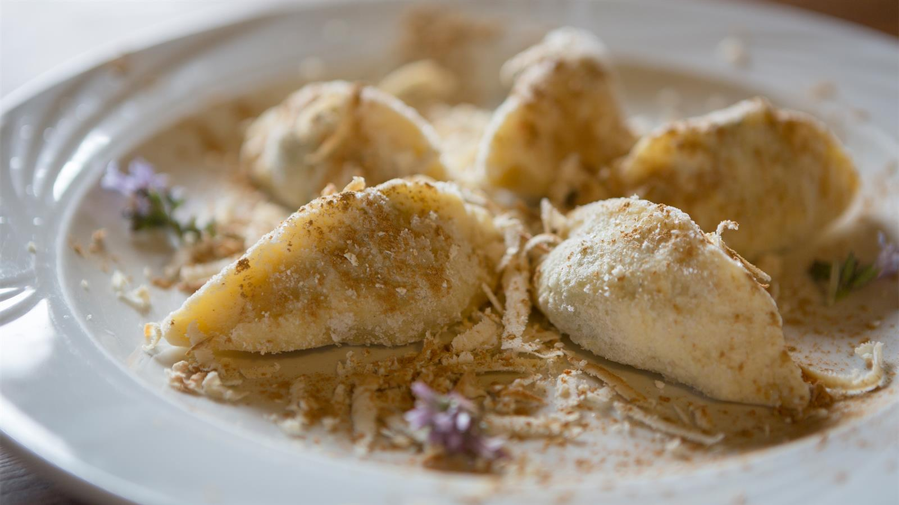

Prima di tutto bisogna preparare il condimento dei Cjarsons, ovvero la morchia, con il burro e la farina di mais. In seguito, si passa alla preparazione della pasta con farina e acqua. In questa fase è importante impastare molto bene e creare una pasta sottile, che dovrà riposare per circa 20 minuti. Nel frattempo, ci si può dedicare alla preparazione del ripieno. Per creare il ripieno bisogna grattugiare le patate lesse e una parte di mela fresca, poi sbriciolare i biscotti. A questo punto, si aggiunge la composta di pere e cacao al composto e si mescola bene. Successivamente, si passa alla realizzazione dei ravioli! Per creare la forma giusta, occorre stendere la pasta e tagliarla con il coppa pasta in forme circolari, per poi riempire ogni forma con il ripieno. A questo punto si chiudono i ravioli, unendo i bordi e schiacciando bene, partendo dal ripieno verso l’esterno. L’ultimo step è quello della cottura. I Cjarsons vanno cotti in acqua bollente salata per due minuti per poi aggiungere sopra la morchia tostata, la ricotta affumicata di capra e un po’ di menta fresca.


Ritorna alla home page